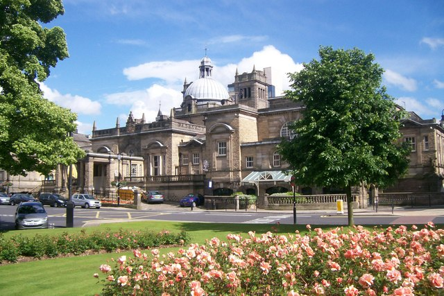

|
||
|  | ||
Harrogate is located near the Nidderdale area of outstanding beauty and the North York Moors. The challenging roads in this area have been used for the Tour de France and the Tour de Yorkshire. There are also many mountain biking trails, including Stainburn Forest less than 10 minutes from the centre of town. Climbers can challenge themselves at Brimham Rocks or Almscliffe Crag and further afield are the limestone formations at Malham. There are many public walking paths and the town boasts the Harrogate Hydro and Knaresborough pools. Harrogate is easily accessible by train from Leeds and York, and the number 36 Bus from Leeds. It is 10 kilometres from Junction 47 on the A1(M). |
||